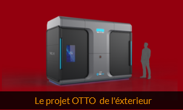

Certaines entreprises de centres de données font de leur mieux pour polluer le moins possible, et mettent ce point en avant pour attirer des clients. Par exemple, Infomaniak, l'entreprise où ce site est stocké, met tout en œuvre pour préserver l'environnement. Cependant, ce n'est pas la première préoccupation des géants du web. La pression des ONG (qui dénoncent cette pollution publiquement) ne suffit pas réellement à changer grand chose actuellement.
Data center à Francfort (Allemagne)Cette pollution est bien sûr, liée aux entreprises qui stockent leurs données, et aux centres qui n'arrangent pas les choses. Mais, comme vous l'avez peut-être compris, elle vient aussi de vous ! Combien de mails lus conservez vous sur votre messagerie ? 500? 1000? 5000? Ces mails ne sont pas stockés sur votre ordinateur, mais dans ces centres de données. Il en va de même pour les services de cloud, comme Google images par exemple. Les supprimer permet de libérer de la place sur les serveurs. Plus de place représente moins de signaux électriques sur les serveurs, donc moins de consommation, et donc moins de pollution ! Vous pouvez vous aussi contribuer à préserver l'environnement. Les entreprises quant à elles, adoptent déjà certaines techniques pour réduire leur impact environnemental : - De nombreux centres de données sont installés dans les pays froids (Suède, Norvège..), dans le but de limiter la chaleur des serveurs, et donc la consommation d’électricité de la climatisation
Data center de Facebook, en Suède- Bien évidemment, certains sont alimentés avec des énergies renouvelables (produites avec les éoliennes, les panneaux photovoltaïques, les barrages hydrauliques...) qui ne polluent pas. - De plus en plus de centres récupèrent la chaleur produite par les serveurs, pour chauffer les logements aux alentours, l'eau des piscines, et aussi les magasins, à l’aide de conduits souterrains. Cette vidéo nous montre par exemple les engagements d'infomaniak :
Microsoft travaille depuis 5 ans sur un projet de data center sous la mer (Project Natick) , alimenté directement par les courants marins.
Vue du projet Natick de MicrosoftLe but est donc de rendre ces serveurs autonomes, aussi bien en énergie qu’en personnel. Le refroidissement des serveurs est assuré par la température de l’eau dans les profondeurs, et la gestion du centre est assurée en partie par l’intelligence artificielle, et par une équipe à distance. Un projet similaire récent nommé OTTO vise à immerger des serveurs dans une cuve au fluide refroidissant, ainsi que robotiser leurs remplacements.
 le projet OTTO de l'éxterieurCette solution réduit grandement la consommation d'énergie liée au refroidissement, car le fluide est spécialement conçu pour ça, et l'absence de travailleurs humains permet d'avoir une chaleur plus élevée au sein du data center.
Jeff Bezos peut alors employer ces moyens pour atteindre l'objectif de son entreprise, 0 émission de carbone d’ici 2040 ! Pour l’aider de votre côté, vous pouvez dors et déjà regarder les séries et films à la télévision, pas sur internet. Il en va de même pour la musique : la radio existe encore ! Vous avez maintenant compris que même si elle est invisible, cette pollution existe bel et bien et occupe une place majeure dans le monde dans lequel nous vivons.